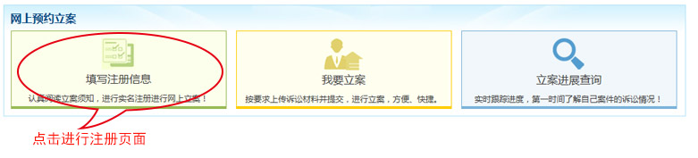
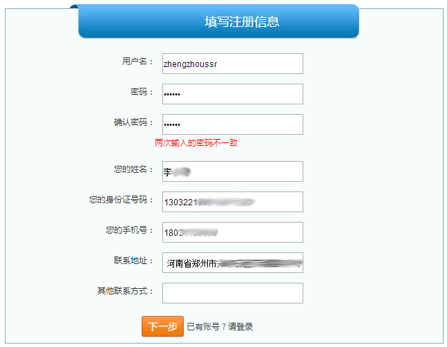
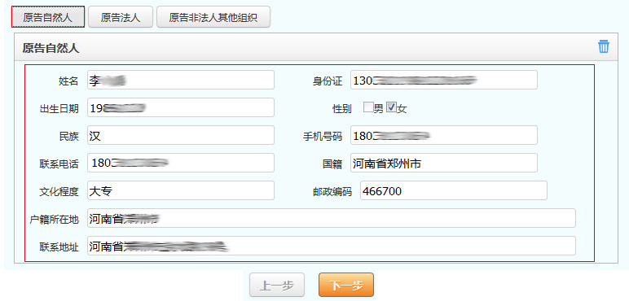
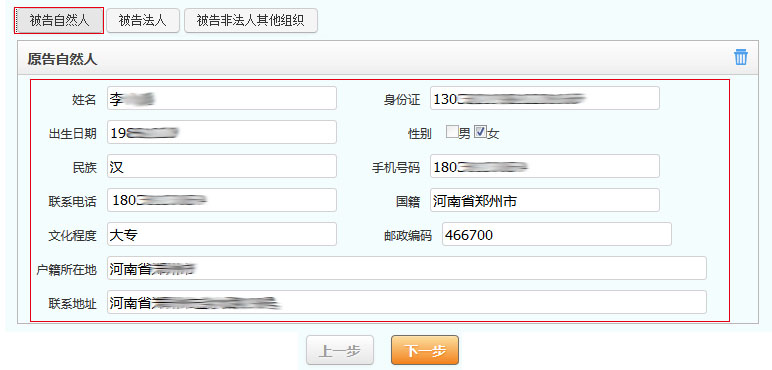
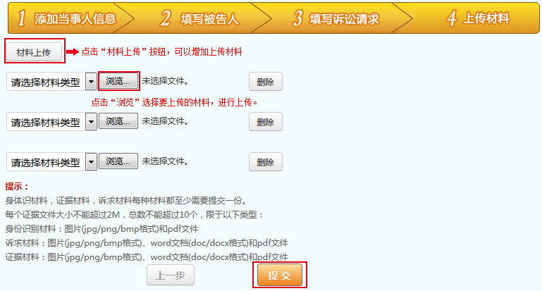

2、进入注册页面后点“我接受”按钮，进入注册信息填写页面。按页面要求填写好，点击“下一步”按钮，进入立案信息页面。

3、进入立案页面，第一步添加当事人信息，点击“原告自然人”按钮下面显示对应的填写区域，如图所示：

4、第二步添加被告人信息，点击“被告自然人”按钮下面显示对应的填写区域，如图所示：

5、第三步，选择案件类型，诉的种类并填写诉讼请求。

6、第四步，上传材料，选择“浏览”按钮，选择要上传的材料进行上传;点击“材料上传”按钮可以增加上传材料框，上传更多的诉讼材料。最后点“提交”按钮进行材料提交。
